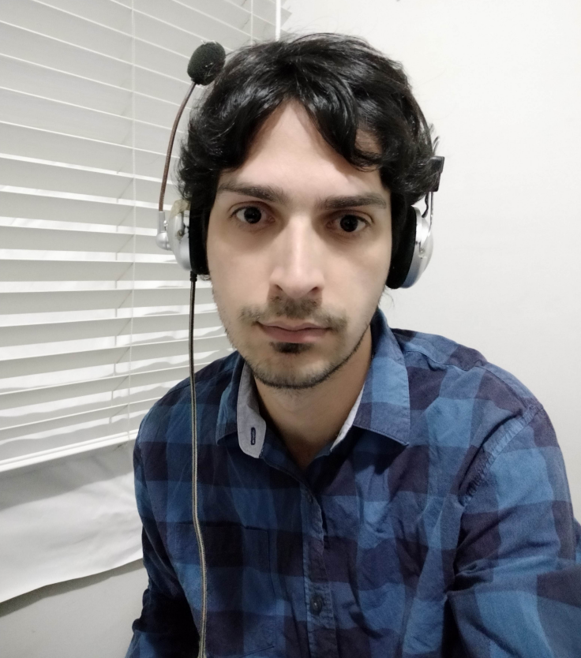

Portifólio Web
Hugo Leonardo Matosinhos de Souza

Meu nome é Hugo tenho 34 anos, moro em Belo Horizonte, Minas Gerais, Brasil.
Gosto muito de aprender e resolver problemas. Quando era criança jogava muito
video game. Principalmente Atari e Genesis, vulgo Mega Drive. Meu pai comprou
nosso primeiro computador quando tinha 10 anos. Aprendi resolver alguns problemas
como alocação de memória usando o comando Memmaker e escrevi alguns scripts usando
Autoexec.bat. Tudo para conseguir jogar alguns games. Mas aí veio o Windows e acabou
com a graça! Computadores mais modernos e a interface gráfica me fizeram deixar um
pouco de lado a vontade de aprender programação. Trabalhei alguns anos como
taxista aqui em Belo Horizonte. Depois fui estudar Egenharia Metalúrgica em
Ouro Preto. Na UFOP tive meu primeiro contato de fato com programação. Cursando
as disciplinas de Programação I e II. Com a linguagem SciLab. Levou alguns anos ainda
pra que eu criasse coragem e largasse a engenharia. Em Ouro Preto tive oportunidade
de desenvolver meu Inglês. Graças a uma fundação que leva o nome do fundador da Escola
de Minas de Ouro Preto. Claude Henri Gourceix. Não poderia deixar de mencioná-lo. Fez muito
para o desenvolvimento tecnológico do nosso país. E me ajudou muito. Mesmo tendo vivido há
três séculos atrás. Então juntei toda experiência de vida adquirida e as ferramentas que eu
tinha. Um computador, acesso a internet e bastante tempo livre! E continuei minha jornada
pelo autoconhecimento. Agora como estudante de desenvolvimento de software e web. Conheci
a Trybe em maio de 2020. No início da pandemia. Desde então comecei a alinhar meu mindset
para entrar para tribo. Tenho aprendido muito desde então. E este site é para compartilhar
meu aprendizado. Vou deixar meu LinkedIn, GitHub e HackerRank. Agradeço a visita.
Dedico este site a minha mãe. Dona Ana Lúcia. Que me apoiou nestes e em outros momentos.
G
- Unix/Bash
- Git/GitHub
- HTTP
- HTML
- JavaScript
- Python
Idiomas:
Sites que eu gosto:
Blog da Trybe